| Ethics Dictionary | Conditions Formulas | PTS Glossary | FAQs |
|
|
| Ethics Dictionary | Conditions Formulas | PTS Glossary | FAQs | |
Note: This chapter is from 'The Road to Clear", Level 4 Pro.
The Anti-Social
Personality
The Suppressive Person
There are certain characteristics and mental
attitudes which cause about 20% of Man to be against any betterment activity or
group. Such people are known to have anti-social tendencies.
When the laws and political life of a country come to a point, where such personalities can easily advance and reach high positions the constructive and decent organizations of that country become suppressed. Barbarism, suppression, criminality within and outside government follow. The economy becomes one-sided and honest, hardworking people can hardly make it. Criminal behavior is what succeeds and gets rewarded. Crimes and criminal acts are committed or accepted by anti-social personalities.
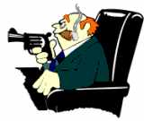 |
In a suppressive society criminal |
Insane patients in institutions can routinely have their psychotic break traced back to contact with such personalities.
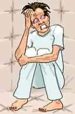 |
Insane patients in institutions |
It is thus important to be able to recognize and isolate such a personality type. You may sometimes find them in high government positions, in the police force, in the courts, in health care and in the field of mental health. At this time they remain relatively undetected and free to do harm by covert and overt means.
It is estimated that as much as 20% of any population fall into this category. But furthermore is it estimated that only about 2.5% of the population is truly dangerous. The 2.5% are known as Suppressive Persons (SP's). The remaining 17.5% are known as Potential Trouble Sources (PTS). Depending of the degree and type of PTS'ness, PTS'es can usually be processed if you recognize their condition and actually handle it head on.
Note: The above figures are subject to much discussion. But the 2.5% matches roughly the figures the psychologists and psychiatrists have for 'anti-social individuals', sometimes by them called sociopaths or psychopaths - individuals that appear normal but do much harm. One study found that 1% of women and 4% of men fell into this category, which is 2.5% of the whole population. In prison populations the percentage is much higher; studies say as high as 50-70%.
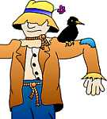 |
A straw-man is somebody |
It would thus be a doable task to protect society and individuals from the destructive acts and effects of such individuals, especially the 2.5% group (the SP's - often called the 21/2 percent'ers). Isolating or handle this little group with justice would cause the situation and the PTS individuals to cool off and destimulate.
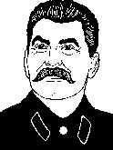 |
History is full of examples of |
Well known historic examples of anti-social personalities would include Hitler, Stalin, Saddam Hussein and numerous other dictators; and infamous criminals such as Al Capone, Jack the Ripper, and other serial-killers, etc. You will see their deeds - big and small - in any daily newspaper; you watch movies about them and so on. You will often see totalitarian regimes and organizations bent towards this behavior. But although you can find all these clear examples you must not overlook the real point here, that anti-social personalities exist in real life and they are very often hard to detect.
If you were to trace the causes for failing businesses and enterprises you will often enough find an anti-social person right in the middle of it and hard at work. In other human tragedies, such as families breaking up or constructive efforts fail and come to nothing, you will usually find an anti-social personality was at work. If life is becoming rough or your hard work comes to nothing, where good health and happiness seem to loose, the trained observer will be able to detect one or more such anti-social person working at it.
 |
In the middle of a failing |
Since 80% of the population try to get along and make a go of it and only 20% seem to work against this it would be of great benefit to us to be able to clearly identify such people. It would save us a lot of hardship and help to prevent failure and misery. So what is exactly the characteristics and attributes of the anti-social personality?
Anti-Social Attributes
We have a list of 12 main characteristics and attributes to describe and
identify the anti-social personality with. These applies mainly to Suppressive
Persons, but Potential Trouble Sources may display them in greater or lesser
degree:
1. An anti-social person deals mainly in bad news. He or she comes with critical or hostile remarks, invalidates and generally suppresses people around him. Also, you will rarely find such a person pass on good news or give compliments.
2. Such a person speaks only in generalities. "They say ..." "They all think..." "Everybody knows..." etc., etc. are used routinely, especially when passing on rumors. "Gossip head" or "bringer of evil or bad news" or "rumor-fabricator" often describes such a person. If you confront such a person with, "Who is everybody?" or track down a rumor it usually turns out to be just one person at work. The anti-social person made up what he or she pretended to be the only or dominating opinion of society or a group.
They usually see society at large as a hostile generality, which is set against the anti-social in particular, so the above activities come about quite natural.
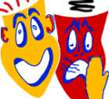 |
Anti-social persons |
3. The anti-social person typically alters to the worse any message going through him or her. Good news are stopped and only bad news, often made worse, are passed on. Such a person may even "pass on bad news" which were in fact invented to make the PTS person or others feel bad.
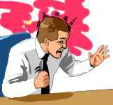 |
Receiving
any form |
4. A truly anti-social person does not respond to treatment, processing, reform or psychotherapy. It terrifies him.
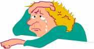 |
The
anti-social's |
5. Around such a personality you will find ill and 'humble' friends and associates. They will typically behave in a crippled manner. They will be seen to fail in life; any little success is invalidated.
 |
The PTS associates make |
Such associates of an anti-social make trouble
for others. When they are treated or educated, they have no stability of gain
but promptly relapse or lose their advantages of knowledge. They are under the
suppressive influence of the truly anti-social.
Treated medically, such associates commonly do not recover in the expected time
but can get worse or have a poor and long recovery time. It is quite useless to
treat or help or train such persons as long as they remain under the influence
of the anti-social person.
The largest group of insane are insane because of such anti-social connections.
They do not recover easily for the same reason. Oddly enough we rarely see the
anti-social personality institutionalized. Only his "friends" and
family are there.
|
The anti-social will pick |
6. The anti-social personality routinely picks the wrong target or blames the wrong cause.
If a tire is flat from driving over a nail, he or she blames a passenger, the cat or some other irrelevant 'cause' for the problem. If the TV won't turn on he blames it on whoever is present instead of checking if it is plugged in and in good repair. He routinely blames any mishap or failure on others instead of finding the cause.
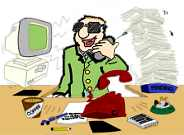 |
Anti-socials cannot finish |
7. Anti-social's cannot finish a cycle of action.
They routinely become surrounded with incomplete projects. As a result you will often find their homes and equipment or office in a mess and in bad repair (types of unfinished cycles may however vary so the above is just a possible indicator).
 |
Anti-socials
have a low |
8. As the police knows, many anti-social persons will have no trouble with confessing to alarming crimes when forced to do so, but they will have no sense of responsibility. They see their actions as having little to do with their own intentions or actions. It "just happened".
They have no sense of correct causation and especially cannot feel any guilt, shame or responsibility for what happened.
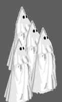 |
Ku-Klux-Klan
originally came |
9. The anti-social personality supports only destructive groups and attacks or rages against any constructive or betterment group.
10. This type of personality approves only of destructive actions and fights against constructive or helpful actions or activities. People defending a good cause or creative people will often be like a magnet for anti-social personalities who see in their work something which must be covertly destroyed. The anti-social may pose "as a friend", but try to poison and destroy.
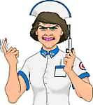 |
Activities that destroy in the |
11. True help of others can drive the anti-social person up the wall. Activities which destroy in the name of 'help', on the other hand, are warmly supported.
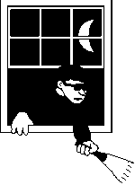 |
"Ownership is an idea |
12. The anti-social personality has a bad sense of ownership. To him nothing is ever really owned. Ownership is an idea just made up to fool people.
The Basic Reason
The basic reason the anti-social personality behaves as he or she does is due to
a hidden terror of others.
Such a person sees every other individual as an enemy. They see others as
enemies that covertly or overtly should be destroyed.
To them good survival depends on keeping others down or keeping them ignorant.
If they hear about programs seeking to make others stronger or brighter, the
anti-social personality sees it as a personal danger and will fight it.
They see it as they would be much better off if people around them were weak,
obedient, fearful and stupid. It would be seen as an immediate threat to their
survival if others got stronger or brighter.
|
To the anti-social |
Such a person has no trust in others. They are
terrified of them. They usually cover this up in clever ways and it can be hard
to pinpoint or detect.
When such a personality goes insane the world is full of Extra-terrestrials. The
police or the Marcabians (a type of extra-terrestrials) have built in
radio-transmitters in his and everybody else's heads and listen in.
But most of such people do not show obvious signs of insanity. They can function
in society and appear to be quite rational. They can be very convincing about
their motives. On the surface they may appear to be solid citizens.
The 12 points above are things which such a
personality cannot detect in himself or herself. This is so true that if you
thought you found yourself in one of the above categories you can now relax.
Self-criticism is a luxury the anti-social cannot afford. The last thing he will
see or admit to is his own shortcomings. He must be right all the time.
They see themselves as being in constant danger. If you proved such a person
wrong, you might even cause him or her to become severely ill. Only the sane and
well-balanced person tries to correct his conduct and see other people's views.
 |
Through Search & Discovery |
Relief
The first thing in handling anything is to know about it. The second is to be
willing and able to confront it. Using the data of the PTS tech you can be given
a proper search for and discovery of hard core suppressive persons in your
past that you have known and dealt with. If you then recognize their bad
influence and disconnect, you will experience great deal of relief.
In society, if it were to recognize this personality type as a sick being, they
could isolate them as they do with people with contagious diseases. This would
result in a social and economic recovery for society at large.
Things are not likely to really improve when 20% of the population is permitted
to dominate and damage the remaining 80%.
As democracy and majority rule is the preferred political system at his age,
this would be a natural next step: Majority sanity should rule our daily lives
without giving power to the few to destroy or unsettle the rest of society.
The worst thing about this situation is that anti-socials will not allow others
to help or effectively treat them. The sad fact is that they do not respond well
to treatment, even when this is attempted.
Suppression and Entheta
Anti-social persons use and speak entheta. Entheta
means "Enturbulated thought or life. This is especially destructive
communications based on lies and confusions in an attempt to overwhelm or
suppress a person or group. Entheta has no power in itself but feed on theta
in a parasitic fashion.
This is an important datum as it is often the PTS person that "feeds"
the SP terminal. Thus by working with the PTS person you can find out what he is
doing to fuel the situation and have him change that. In some instances
disconnection is the only workable option. You cut the feed-line completely and
the entheta will stop.
 |
Social
Persons are best |
The Social Personality
Man is prone to witch hunting. The above 12 points can certainly lead to that.
From a technical viewpoint you don't need to call the terminals you handle on a
pc for Anti-social Personalities or Suppressive Persons. Often enough they are
not. Yet they have to be handled with PTS tech to help the pc. Since a basic
structure of the Bank is said to be terminals confronted by opposition terminals
it can be hard to always sort out what is happening. In life SP's will dramatize
being opposition terminals to the pc and try to do him in. "Life imitates
art" you could say. Just about any story has good guys and bad guys in it.
These types of battles have been happening for eons in real life and this kind
of Chain of incidents with terminals and opposition terminals are on the
pc's Time Track as well. So a big factor to consider in any PTS action is the
restimulation of opposition terminals in the pc's Bank. Usually it is a
combination of the two: (1) actual opposition, threat or suppression in the
present and (2) the restimulation it causes. We have chosen to stay out of
this heated debate of good and evil, and judging people from second hand
knowledge by introducing the term Antagonistic
Terminal (AT) as a technical term. An AT is simply a person or group that,
to be correctly handled on the case, has to be addressed with PTS tech.
Period. We would estimate that 90% of all the PTS handlings done are actually on
terminals, where the dominant factor is the restimulation or the pc's own
inability to deal with opposition, antagonism, or radical different points of
view. After all this is no easy matter and is the one element all conflicts have
in common. By far the highest percentage of handlings has to do with family
members. A dominant spouse or parent is the most common. Pc's often feel it is
an overt of magnitude to call family members for anti-social or suppressive.
Sometimes they are. In many cases they are not. A good ethics handler (Ethics
Officer) should always look at what the pc is doing to generate antagonism. A
good part of the situation can usually be handled by educating the pc. See also
'False
PTS'.
A witch hunt is easy to start. All you have to do
is to call the "people wearing black hats" for the villains and you
can start a hunt for people in black hats.
But this mechanism of witch hunting makes it very easy for anti-social persons
to bring about chaos or a dangerous environment. The Spanish Inquisition,
McCarthy's blacklisting of 'communists' in the 1950s in USA, 'Ethnic cleansing'
of Nazi Germany or Yugoslavia are just a few examples of this. No one was
safe and these things were very suppressive by themselves.
But even the anti-social personality, in his
twisted way, is quite certain that he is acting for the best. The witch hunter
is commissioned by God. He will often see himself as the only good person
around: "I am trying to do what is right; God's Will! It's for the good of
everyone". The only thing that is wrong about his thinking is that there
are dead bodies all around. He is often so thorough that no one is left
alive to be protected from these imagined evils. His conduct over a
period of time - towards other people, towards his duties and work, and the products
and effects he produces are the only reliable indicators to determine his
social character. It is the only reliable method to detect whether an individual
is an anti-social or a social personality. Their motivation for self are
similar: self-preservation and survival. If you just listen to them you may not
be able to hear much difference in their explanations. They simply go about
doing things in radical different ways.
As Man in his current state is neither calm nor brave; anyone can be nervous and
be on the lookout for dangerous persons. He may think he sees such persons over
there in the black hats and a witch hunt can begin.
It is therefore even more important to identify the social personality than the anti-social personality. By doing so you avoid to shoot the innocent out of mere prejudice or dislike or because of some short misconduct or dramatization.
Do a Comparison
The social personality can best be defined by comparison with his opposite, the
anti-social personality.
It is very easy when you compare to see the difference. No test for finding
anti-social persons should ever be used without checking both sides. As so many
other things in ST it is a scale. On the same scale we must have the upper and
lower ranges of Man's actions.
A test that declares only anti-social personalities without also being able to
identify the social personality would actually be a suppressive test. It would
be like answering "Yes" or "No" to the question "Are
you still possessed by Satan?" Anyone who answered it could be found
guilty. That is how witch hunting is done. While this method worked for
the Inquisition, it does not make a valid test.
Society functions only through the efforts and work of social people. These are the people that must be recognized and given rights and freedoms. One danger in publishing a list as the above is, that anti-social people somehow will be able to fit their enemies among good people into one or more of the categories and 'run them out of town'.
As society functions, prospers and improves solely
through the hard work of social personalities, one must know them as they,
not the anti-social, are the worthwhile people. These are the people who
must have rights and freedoms. Attention is given to the anti-social solely to
protect and assist the social personalities in the society.
All democratic efforts, educational and cultural programs and even the human
race itself will fail unless one can identify and hold back the anti-social
personalities and help and forward the social personalities in society. For the
very word "society" implies social conduct and without it there is no
society at all, only a dog-eats-dog barbarism.
You will note in the characteristics of the
anti-social personality that intelligence is not a point. They can be bright,
stupid or average. Thus anti-socials who are very intelligent can rise to high
positions, even heads-of-state.
Ability or wish to rise above others are not a sign of being anti-social. When
they do become important people or rise to power they can become very visible
because of the consequences of their acts. But they can be unimportant people,
house tyrants, wife beaters, small crooks, thieves and losers, spokesmen or
supporters of bad causes, do 'science' to control and kill his fellow man or
whatever. Usually, if you deal with an SP of some status, you will find one hard
core anti-social and a crowd of imitators and supporters such as in a
suppressive regime or organization.
The twelve given characteristics alone is what can be used to identify the
anti-social personality.
|
You have to do a comparison |
The same 12 characteristics reversed are the only
criteria of the social personality.
The identification of an anti-social personality cannot be done accurately
unless one also at the same time reviews the positive side of his life.
All persons under stress can react with moments of anti-social conduct. This
does not make them anti-social personalities.
The true anti-social person has a majority of anti-social characteristics. He
has a track record of this. Positive identification takes solid evidence. But if
you sit down with a person and there is no way he will reform his behavior
because 'I am 100% right in doing what I am doing', you know that you have an
individual that is beyond a momentary upset or lapse. This is no proof either,
unless that's how it is point for point and rather consistently.
The social personality has a majority of social
characteristics.
Thus one must examine the good with the bad before one can truly label the
anti-social or the social.
In reviewing such matters, very broad testimony and evidence are best. One or
two isolated instances determine nothing. One should search all twelve social
and all twelve anti-social characteristics and decide on the basis of actual
evidence, not opinion.
 |
Social Attributes
The twelve primary characteristics of the
social personality are as follows:
1. A social personality passes communication without much alteration and if they change anything they tend to delete bad news or present things in a more positive light.
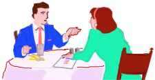 |
Social persons use |
2. The social personality uses specifics when describing things. "John Blow said..." "The News Magazine wrote..." He gives sources of data when important or possible.
He may use generalities as "they" or "people" but will readily be specific when asked who said so. They do not use generalities to hide behind or to upset people.
 |
The social person uses specifics |
3. The social personality is happy to pass on good news and hesitate in passing on bad news.
He may not even want to pass on criticism when it doesn't matter.
He is more interested in making others feel liked or wanted. He may err toward comforting and reassure people rather than use criticism. He does not like to hurt people's feelings. He sometimes errs in holding back bad news or orders when they seem critical or harsh.4. Treatment, reform and psychotherapy, even in a light form, work very well on the social personality.
The anti-social may promise to reform, but nothing changes. Only the social personality can change or improve easily. It is often enough to point out unwanted conduct to a social personality. He will see the truth of it and turn things around. Criminal codes and violent punishment are not needed to regulate social personalities. Such punishment may restrain anti-socials, on the other hand, but are not seen to change their conduct except based on fear.
 |
The social personality |
5. The associates of a social personality tend to be well, happy and of good morale.
A truly social personality quite often produces betterment in health or fortune by his mere presence and influence. He never reduces the health or morale in his associates.
The social personality heals well and will recover rather easily from illness. He accepts and responds well to proven treatment.
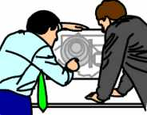 |
The
social person can see |
6. The social personality can see the causes of things and select correct targets for correction. He fixes the tire that is flat rather than attack the passenger or kick the cat. If the TV doesn't work he checks if it is plugged in and in good repair.
7. Cycles of action begun are usually completed by the social personality, if possible. He tends to have his personal things in working order as he does not abandon them mid air.
8. The social personality is ashamed of his overts and has to overcome himself to confess them. He takes responsibility for his errors.
9. The social personality supports constructive groups and tends to protest or resist destructive groups.
10. Destructive actions are protested by the social personality. He assists constructive or helpful actions.
11. The social personality helps others and actively resists acts which harm them.
 |
The social person is 'the good |
12. Property is property of someone to the social personality. He respects personal property of others. He is against misuse and theft.
Basic Motivation
The social personality is motivated by the greatest good. He has a natural sense
of ethics and what is right and wrong.
He does not feel haunted by imagined enemies but he does recognize real enemies
when they are facing him.
The social personality wants to survive and wants others to survive. Here
is a major difference; the anti-social personality really covertly wants 'others
to fail so he can survive'. His world is a 'dog-eat-dog' kind of world
where only the meanest survive.
Basically the social personality wants others to be happy and do well. The
anti-social, on the other hand, is very clever in doing others in and make them
fail.
A key point to understanding all this is not to get fixated upon a person's
outward signs of success, but examine his basic motivations. You see some
anti-socials amass great fortunes through suppression and crime. The social
personality, when successful, will often be a target for the anti-social. He
will seek out weak points or gain his confidence in order to make him fail.
So there can be great benefits to accurately determine the social intent of people. If you can detect the social personality and protect his rights and allow him to work and if you can detect the anti-social person and restrain him, society will prosper. If not, society will keep suffering from insanity, criminal acts and senseless wars.
Unless we realize and correctly apply the true
characteristics of the two types of personalities, we will continue to live in
an uncertainty of who our enemies are.
All men have committed acts of violence or omission for which they could be
criticized, attacked or punished. In all Mankind there is not one single perfect
human being. And if there was one, there would be about 5 billion different
opinions about it.
But there are those who try to do right and those who specialize in wrong.
How a Suppressive Person Becomes One
The above text talks about the Anti-social personality and that this type of
personality makes up as much of 20% of the population. But what is of special
interest is the 2.5% group of this. These are the suppressive persons (SPs).
Since Man is basically good, how come the SP seems to fall outside this? The
best explanation is contained in 'The Road to Clear' - especially Level 4 - where we covered Service
Computations and Evil Purposes. Studying that gives good insight in the reason
why. But here are some definitions and data to supplement that:
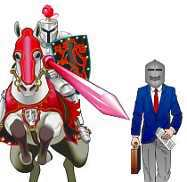 |
An SP
is 'solving' a present time problem In picture: Business man thinks and acts |
He's solving a present time problem which hasn't in actual fact existed for the last many trillion of years in most cases. Yet he is acting upon it in present time to solve that problem. The guy is totally stuck in a past incident and thinks it is present time; that is the whole anatomy of psychosis. 2. He covertly tries to destroy or speak bad about any effort to help anybody. He is violently opposed to anything intended to make human beings more powerful or intelligent. A suppressive automatically and immediately will oppose any betterment activity, calling it evil or bad. 3. the person is in a mad, desperate situation of some past incident and is "handling it" by committing overt acts today.
So it is somebody who will overtly or covertly work against the auditor and the auditing. The handling of such a person is outside the scope of Standard Clearing Technology. The tech may hold the key, but it takes more resources and can cause more upsets, attacks and lawsuits than you are prepared for. They are considered to make up only about 0.5% of the general population (per above). They should not be accepted for auditing. The actual percentage and a truly objective, reliable and practical doable test has never been developed, so in many respects it is a two edged sword. "Handle with care", but if you see it, don't fool yourself. A test could possibly be developed. It would have to be based on production records, life history, and affiliations over a long period of time. To try to develop a clinical test based on questionnaires, mental testing, and interviews inevitably leads to witch hunting.
 |
Evil has an appeal to us. From |
From Good to Evil
How evil can take over was explained this way by R. Hubbard in a lecture:
It might interest you how a suppressive person becomes one. That is the guy who has enough overts to deserve more pay-back than you can imagine. It is the guy, who keeps doing things to do others in. He's the villain. Now the reason he got to be such a bad boy was by switching valences.
He had a bad boy over there parked in his mind; and he then, in some peculiar way, got into that bad boy's valence. Now he knows what he is - he's a bad boy. Man is basically good but he mocks-up evil valences and then gets inside them and gets stuck in them. He says the other fellow is bad. He keeps saying the other fellow is bad. He works on this character all the time as something not to be. And eventually he has got this very live character all made up in his mind. Then some day he becomes this other fellow. You see, a valence shift or personality shift happens - he becomes the whole, complete package of personality. And there he is. So now he is an evil fellow. He knows how he is supposed to act. He is supposed to act like the other fellow, the bad character. That's the switch-over. That's how evil comes into being. (Covered in SH Briefing 73, 1966).
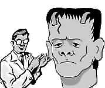 |
Dr. Frankenstein couldn't
confront his |
So the key to handling evil is to be able to confront it in the first place.
That is what went wrong with the guy described in the piece above. The person who couldn't confront evil, but only mock it up as something not to be, eventually gave up and became it. He was Not-is'ing, hating and detesting it. He was holding onto this evil personality package in his mind as something not to be; and suddenly it had become so powerful so he became it. It simply took over.
This is how the Reactive Mind 'works'. It warns you against danger on a stimulus-response level and you don't want to look at those terrible things. Suddenly it has become so powerful so you have no choice but living it.
There are of course degrees of this. A complete switch does not happen out of the blue, just because of one incident. But sometimes one powerful incident suddenly does it and the pc is stuck in that incident. Long before it happens, the person simply withholds himself. But when you pull overts and withholds you are preventing something like this from happening down the road. You are getting the pc's ability to confront evil up. The 'demons' (evil valences) in his mind will loose power. He will regain power over them and the basic goodness of Man will prevail in his conduct and thinking.
Pick
Your Fights
The focus of the PTS tech included in this manual is the pc and how to make him
auditable. We are not trying to say, that you always have to appease enemies or
evil persons. As we are touching upon the age old conflict between good and evil
it is a very hot and opinionated subject. We are only saying "pick your
fights" and as far as auditing is concerned you want to keep the pc out of
hot waters and make him stronger first of all. This is best done on a gradient
scale. Therefore the PTS tech as applied here is not the ultimate answer to how
to deal with evil but simply a practical guide to get your pc audited. If your
pc's ultimate goal is to become capable of taking on all evil in the world in a
final glorious battle and win - more power to him. The PTS tech presented would
still be a good starting point to make him strong enough to do that.
|
|
|
|
|